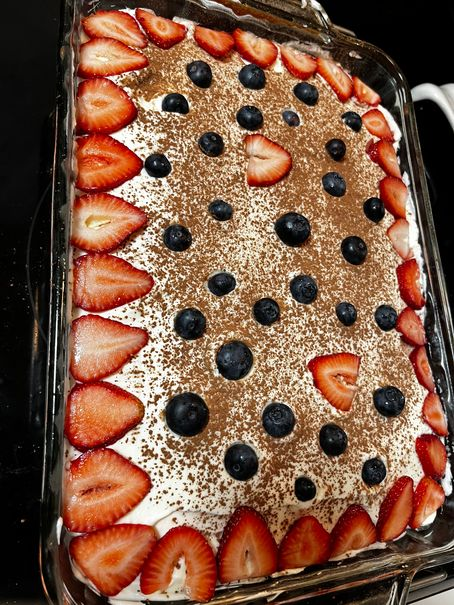

Tres Leches (Milk Cake)

This cake is made with three layers: Cake, filling, and topping. There are 4 types of milk in the filling and topping (whole milk, condensed milk, evaporated milk, and heavy cream). This is an excellent cake for milk lovers!
Ingredients
- 1 ½ cups all-purpose flour
- 1 teaspoon baking powder
- ½ cup unsalted butter
- 1 cup white sugar
- 5 eggs
- ½ teaspoon vanilla extract
- 2 cups whole milk
- 1 (14 ounce) can sweetened condensed milk
- 1 (12 fluid ounce) can evaporated milk
- 1 ½ cups heavy whipping cream
- 1 cup white sugar
- 1 teaspoon vanilla extract
Directions
- Preheat oven to 350 degrees F (175 degrees C). Grease and flour one 9x13-inch baking pan.
- Sift flour and baking powder together and set aside.
- Cream butter or margarine and the 1 cup sugar together until fluffy. Add eggs and the 1/2 teaspoon vanilla extract; beat well.
- Add the flour mixture to the butter mixture 2 tablespoons at a time; mix until well blended. Pour batter into prepared pan.
- Bake at 350 degrees F (175 degrees C) for 30 minutes. Pierce cake several times with a fork.
- Combine the whole milk, condensed milk, and evaporated milk together. Pour over the top of the cooled cake.
- Whip whipping cream, the remaining 1 cup of the sugar, and the remaining 1 teaspoon vanilla together until thick. Spread over the top of cake. Be sure and keep cake refrigerated, enjoy!
Go back to homepage